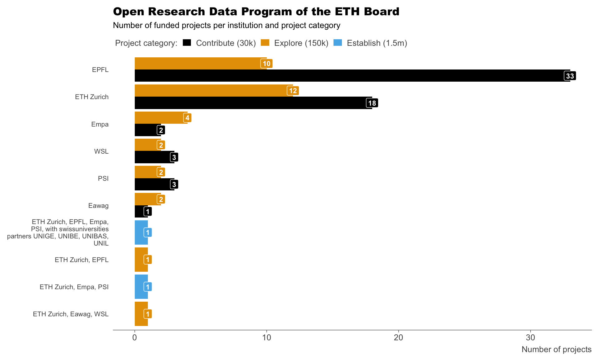

ETH Board Open Research Data (ORD) Program Project Metadata and Report Data
Installation
You can install the development version of ethord from GitHub  with:
with:
devtools::install_github("Global-Health-Engineering/ethord", dependencies = TRUE)Example Usage
Here’s a quick example showing how to visualize the Open Research Data Program data:
library(ethord)
library(ggplot2)
library(ggthemes)
library(dplyr)
portal |>
mutate(category = case_when(
category == "Contribute" ~ "Contribute (30k)",
category == "Explore" ~ "Explore (150k)",
category == "Establish" ~ "Establish (1.5m)"
)) |>
mutate(category = factor(category,
levels = c("Contribute (30k)",
"Explore (150k)",
"Establish (1.5m)"))) |>
count(institutions, category) |>
mutate(institutions = str_wrap(institutions, width = 30)) |>
ggplot(aes(x = reorder(institutions, n),
y = n,
fill = category)) +
geom_col(position = "dodge") +
geom_label(aes(label = n),
position = position_dodge(width = 0.9),
show.legend = FALSE,
color = "white",
fontface = "bold",
size = 3) +
coord_flip() +
labs(
title = "Open Research Data Program of the ETH Board",
subtitle = "Number of funded projects per institution and project category",
y = "Number of projects",
x = NULL,
fill ="Project category:"
) +
scale_fill_colorblind() +
statR::theme_stat(base_size = 10) +
theme(panel.grid.major.y = element_blank(),
axis.text.y = element_text(size = 8))
Download as CSV Files
If you prefer to work with the data outside of R, you can download individual datasets as CSV files.
- Right-click on the “Download CSV” link for the dataset you want.
- Select “Save Link As”
 or “Download Linked File”
or “Download Linked File”  .
. - Choose where you’d like to save the file on your computer.
| dataset | CSV |
|---|---|
| docs_detail | Download CSV |
| docs_proposal | Download CSV |
| docs_report | Download CSV |
| portal | Download CSV |
Data
docs_detail
The dataset docs_detail has 7 observations and 19 variables
| project_id | call_category | applicant_id | main_applicant_institution_name | applicant_type | applicant_title | applicant_first_name | applicant_last_name | applicant_institution | applicant_department_name | applicant_lab_name | applicant_orcid_id | title | acronym | abstract | keywords | project_duration_months | funding_requested | project_start_yyyy_mm_dd |
|---|---|---|---|---|---|---|---|---|---|---|---|---|---|---|---|---|---|---|
For an overview of the variable names, see the following table.
| variable_name | variable_type | description |
|---|---|---|
| project_id | numeric | A unique identifier for each project, represented as a numerical value. |
| call_category | character | The category of the project call, with possible values including Explore and Contribute. |
| applicant_id | character | A unique identifier for the applicant, typically in the format ORD followed by a series of numbers. |
| main_applicant_institution_name | character | The name of the main institution associated with the applicant. |
| applicant_type | character | The type of applicant, categorized as either Primary or Secondary. |
| applicant_title | character | The title of the applicant, such as Prof. Dr. |
| applicant_first_name | character | The first name of the applicant. |
| applicant_last_name | character | The last name of the applicant. |
| applicant_institution | character | The institution affiliated with the applicant. |
| applicant_department_name | logical | The name of the department within the applicant’s institution. |
| applicant_lab_name | character | The name of the laboratory associated with the applicant. |
| applicant_orcid_id | logical | The ORCID identifier for the applicant. |
| title | character | The title of the project. |
| acronym | character | A shortened acronym representing the project title. |
| abstract | character | A brief summary or abstract of the project. |
| keywords | character | Relevant keywords associated with the project. |
| project_start_yyyy_mm_dd | character | The start date of the project in the format YYYY-MM-DD. |
| project_duration_months | numeric | The duration of the project in months, represented as a numerical value. |
| funding_requested | numeric | The amount of funding requested for the project, represented as a numerical value. |
docs_proposal
The dataset docs_proposal has 5 observations and 11 variables
| project_id | cost_personnel_senior_staff_fr | cost_personnel_postdocs_fr | cost_personnel_other_fr | cost_personnel_students_fr | cost_travel_fr | cost_equipment_fr | cost_publication_fr | cost_social_fr | cost_other_fr | cost_subcontracting_fr |
|---|---|---|---|---|---|---|---|---|---|---|
For an overview of the variable names, see the following table.
| variable_name | variable_type | description |
|---|---|---|
| project_id | numeric | A unique identifier for each project, represented as a numerical value. |
| cost_personnel_senior_staff_fr | logical | The cost of personnel for senior staff in Swiss Francs (CHF), expected to be a numerical value. |
| cost_personnel_postdocs_fr | numeric | The cost of personnel for postdoctoral researchers in Swiss Francs (CHF), represented as a numerical value. |
| cost_personnel_other_fr | numeric | The cost of personnel for other staff members in Swiss Francs (CHF), represented as a numerical value. |
| cost_personnel_students_fr | logical | The cost of personnel for students in Swiss Francs (CHF), expected to be a numerical value. |
| cost_travel_fr | numeric | The cost of travel expenses in Swiss Francs (CHF), represented as a numerical value. |
| cost_equipment_fr | numeric | The cost of equipment in Swiss Francs (CHF), represented as a numerical value. |
| cost_publication_fr | logical | The cost of publication expenses in Swiss Francs (CHF), expected to be a numerical value. |
| cost_social_fr | numeric | The cost of social expenses in Swiss Francs (CHF), represented as a numerical value. |
| cost_other_fr | numeric | The cost of other expenses in Swiss Francs (CHF), represented as a numerical value. |
| cost_subcontracting_fr | numeric | The cost of subcontracting in Swiss Francs (CHF), represented as a numerical value. |
docs_report
The dataset docs_report has 60 observations and 7 variables
| project_id | item_id | item_name_long | item_name_short | quantity | description | link |
|---|---|---|---|---|---|---|
For an overview of the variable names, see the following table.
| variable_name | variable_type | description |
|---|---|---|
| project_id | numeric | A unique identifier for each project, represented as a numerical value. |
| item_id | numeric | A unique identifier for each item within a project, represented as a numerical value with decimal places. |
| item_name_long | character | A detailed name describing the item, such as ‘New or enhanced webs’ or ‘New or enhanced data’. |
| item_name_short | character | A brief name summarizing the item, such as ‘website’, ‘repository’, or ‘dataset’. |
| quantity | character | The number of items, represented as a discrete numerical value. |
| description | character | A text description providing additional context about the item. |
| link | character | A URL linking to the item or its associated resource, such as a website or repository. |
portal
The dataset portal has 96 observations and 8 variables
| url | title | category | institutions | data_type | field | researchers | abstract |
|---|---|---|---|---|---|---|---|
For an overview of the variable names, see the following table.
| variable_name | variable_type | description |
|---|---|---|
| url | character | The URL linking to the specific research project’s details or webpage. |
| title | character | The title of the research project. |
| category | character | The category or classification of the research project, such as Contribute, Explore, or Establish. |
| institutions | character | The institutions involved in the research project, such as EPFL, ETH Zurich, or Empa. |
| data_type | character | The type of data associated with the research project, such as Microstructure data, Environmental data, or Medical data. |
| field | character | The field of study or discipline of the research project, such as Materials Science, Earth sciences, or Life sciences. |
| researchers | character | The names of the researchers involved in the project. |
| abstract | character | A brief summary or abstract of the research project. |
License
Data are available as CC-BY.
Citation
#> To cite package 'ethord' in publications use:
#>
#> Massari N, Schöbitz L, Tilley E (2025). "ethord: ETH Board Open
#> Research Data (ORD) Program Project Metadata and Report Data."
#> doi:10.5281/zenodo.16563064
#> <https://doi.org/10.5281/zenodo.16563064>,
#> <https://github.com/Global-Health-Engineering/ethord>.
#>
#> A BibTeX entry for LaTeX users is
#>
#> @Misc{massari_etall:2025,
#> title = {ethord: ETH Board Open Research Data (ORD) Program Project Metadata and Report Data},
#> author = {Nicolo Massari and Lars Schöbitz and Elizabeth Tilley},
#> year = {2025},
#> doi = {10.5281/zenodo.16563064},
#> url = {https://github.com/Global-Health-Engineering/ethord},
#> abstract = {This data package contains metadata and report data from 96 research projects funded by the joint Open Research Data (ORD) program of ETH Zurich, EPFL, and the four research institutes of the ETH Domain. The package includes project-level metadata, such as project titles, descriptions, and categorizations (Establish, Explore, Contribute), as well as data extracted from reports submitted by each project, providing insights into the projects' objectives, methods, outcomes, and impacts.},
#> version = {0.0.3},
#> }